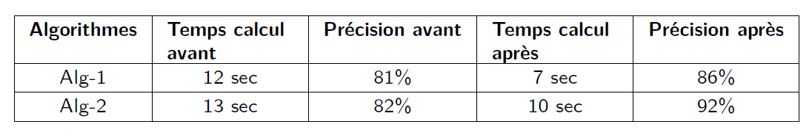
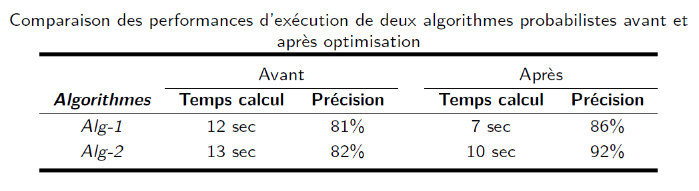
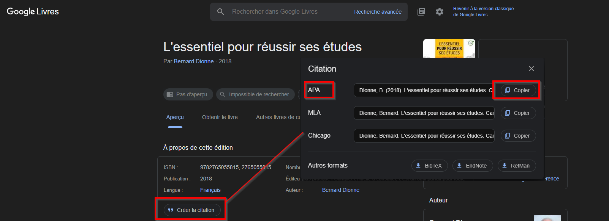

Présenter un travail
Contenus de la page
3-1 Organisation d'un travail écrit long
3-2 Méthodes de présentation des propos
3-3 Méthodes de présentation des résultats
3-4 Règles de présentation matérielle des travaux
Temps requis
60 minutes
Structure d'un travail écrit
Modèle de document Word
Un modèle de document Word est accessible dans l'équipe Teams Étudiants 420 > Fichiers > Ressources. Une fois le modèle (.dotx) téléchargé, lorsque vous cliquerez dessus il vous ouvrira un nouveau document vide avec la structure d'un travail.
Il ne vous reste qu'à écrire votre travail en prenant bien soin d'utiliser les styles pour les titres afin de permettre la génération de la table des matières.
Un travail est habituellement divisé en 5 parties :
- Pages laminaires : ces pages viennent avant votre travail et incluent la page titre et la table des matières. Dans un travail particulièrement complexe, on peut ajouter une table des figures ou des tableaux.
- Introduction : présente le contenu de votre travail. Diverses techniques d'introduction existent, mais le grand classique de l'entonnoir (sujet amené, sujet posé et sujet divisé) est très souvent approprié.
- Corps du travail : c'est dans cette partie que vous présentez votre propos et que la majorité des points de l'évaluation sont attribués. Le corps du travail varie grandement selon le cours et les consignes.
- Conclusion : fait un retour sur le contenu du travail. La technique classique présente une conclusion en deux parties : un rappel des éléments importants et une ouverture vers un sujet connexe ou un approfondissement de la question traitée.
- Pages annexes : les annexes comprennent les pages qui ne peuvent être incluses dans le travail, car soit elles prennent trop d'espace soit elles ne sont qu'un complément d'information. Les pages annexes incluent la médiagraphie, l'index et le glossaire si présents.
Les normes de présentation des travaux écrits imposent généralement les éléments suivants :
- Taille et police d'écriture (10 à 12 points, Arial, Times New Roman, Calibri...);
- Espacement (entre les paragraphes, marges du document, interligne de 1.5 ou 2...);
- Pagination (attention aux pages laminaires qui sont souvent numérotées en chiffres romains...);
- Format des titres (souvent des majuscules ou du caractère gras, la numérotation des titres est souvent recommandée...);
- Format des pages (format de la page titre, utilisation de papier lettre ...);
- Format des citations et de la médiagraphie (présenté plus loin).
Quand utiliser les normes de présentation
Certaines personnes enseignantes demandent plus souvent que d'autres le respect du guide méthodologique. En règle général, vous devriez utiliser le guide du Cégep pour tout travail sauf lorsque :
- Il est explicitement indiquer de ne pas faire de mise en page;
- Un autre format de présentation est demandé.
Souvenez-vous, vous ne perdrez pas de points pour avoir utilisé le guide méthodologique du Cégep alors que ce n'était pas exigé, mais l'inverse n'est pas vrai !
Organiser le contenu d'un travail
La principale façon d'organiser un travail est de respecter la structure suivante :
- Utiliser des titres pour organiser les grandes parties d'un travail;
- Utiliser des intertitres pour organiser le contenu des parties;
- Diviser le contenu des sections en un paragraphe par idée.
Bien que simple, cette méthode permet à la personne qui vous lit (et souvent qui évalue votre travail) de bien se retrouver dans le fil de vos idées et ce que vous voulez communiquer. On dit souvent que vous devez être content de votre travail, et c'est vrai; mais il faut aussi que la personne qui en fait la correction vous comprenne le mieux possible pour maximiser vos points.
Utiliser le plan comme structure de titre
Si vous prenez le temps de faire un plan de votre travail, vous devriez faire ressortir les titres principaux et les intertitres directement de la structure de votre plan. Il se peut que vous ayez quelques modifications à faire par la suite, mais l'essentiel de votre structure s'y retrouve.
Présenter des données correctement
Il arrive que l'on doive présenter des données multiples dans un travail. Les quatre modes de présentation sont :
- La liste : présente des éléments qui ont un lien entre eux. On utilise une liste numérotée lorsque (et seulement lorsque) l'ordre des éléments est important. En français, la puce est la marque typographique correcte pour la liste (et non le tiret);
- Le tableau : présente une séquence d'élément organisé par au moins 2 caractéristiques (lignes et colonnes). Chaque tableau doit être accompagné d'une [légende]{ Titre de l'élément} pour en préciser le sens. On doit faire référence au tableau dans le texte. On ne fait jamais de tableau avec une seule ligne ou colonne de données. De plus, l'on évite les tableaux chargés de texte.
- L'image : aussi appelée figure, elle sert à représenter un élément visuel. Chaque image doit être accompagnée d'une [légende]{ Titre de l'élément} pour en préciser le sens. On doit faire référence à l'image dans le texte.
- Le graphique : présente des données sous forme visuelle. Les éléments clés d'un graphique (comme les titres des axes, les graduations et la légende du graphique) doivent être présents. De plus, chaque graphique doit être accompagné d'un titre. On doit faire référence au graphique dans le texte.
Des tableaux clairs
Personne n'aime les tableaux chargés et lourds. Voici quelques trucs pour rendre vos tableaux plus agréables à consulter.
- Éviter les bordures verticales;
- Limiter le nombre de bordures horizontales : espacez correctement les lignes;
- Utiliser des bordures plus épaisses pour l'en-tête et le pied de page;
- Groupe les mots communs à plusieurs titres de colonne ou de ligne;
- Privilégier des colonnes qui utilisent la pleine largeur de la page plutôt que de développer en hauteur.




Citer ses sources dans un travail écrit
Il est important de toujours mentionner l'information puisée dans des sources, sans quoi vous vous exposez à une accusation de plagiat et des sanctions administratives.
Sanctions pour le plagiat et la tricherie
Au Cégep de Victoriaville, les plagiats et la tricherie sont consignés durant toute la durée de vos études. La gradation des sanctions s'applique indépendamment des cours.
- Au premier plagiat commis au Cégep, vous recevez la note de 0 pour le travail;
- Au second plagiat commis au Cégep, vous recevez la note de 0 pour le cours (échec automatique);
- Au troisième plagiat commis au Cégep, vous risquez d'être convoqué par la direction pour des sanctions administratives pouvant aller jusqu'à la suspension.
Les mécanismes de citation
Citer une source utilise deux mécanismes, soit l'appel de référence et la médiagraphique (aussi appelée bibliographie). Ces deux mécanismes se complètent et doivent être utilisés ensemble.
- La médiagraphie contient l'ensemble des sources utilisées et présente l'information pertinente pour identifier la source.
- L'appel de référence indique quelle source d'information est utilisée pour appuyer un propos particulier ou la provenance d'une citation.
Au Cégep, la présentation des sources repose sur le guide de Bernard Dionne, L'essentiel pour réussir ses études, qui utilise une présentation des sources en format APA 7e édition ou la méthode Dionne. Il vous appartient de vérifier avec chaque département la version retenue. Au département d'informatique, la méthode retenue est APA 7e édition.
La médiagraphie
Elle regroupe l'ensemble des sources utilisées dans le travail. On l'appelle traditionnellement bibliographie. Elle fait partie des pages annexes (présentées après le contenu du travail). Plusieurs règles sont à connaître dans la présentation d'une source dans une médiagraphie. On suggère d'utiliser un site générateur d'entrées de médiagraphie comme Mon Diapason pour gérer correctement la médiagraphie. Ce site supporte la méthode APA et Dionne. Voici d'autres trucs pour bien citer vos sources :
- Citer un livre : si vous trouvez le livre dans Google Livres, vous verrez un bouton Créer la citation qui vous fournira une citation APA toute faite.
- Citer une page Wikipédia : vous avez simplement à entrer le nom de la page sur cette page Wikipédia et une citation dans le format APA se génère (il faut défiler un peu).
- Citer un article scientifique : si vous trouvez l'article dans Google Scholar, vous verrez un bouton Citer sous la vedette de chaque article.


L'appel de référence
L'appel de référence permet d'indiquer dans le travail de quelle source provient l'information ou l'extrait présenté. On fait un appel de référence à l'endroit où l'on utilise une information ou à l'endroit que l'extrait est inséré. Dans la méthode APA, l'appel de référence est le nom de la personne auteure et l'année de publication entre parenthèses. Dans la méthode Dionne, il s'agit d'une note de bas de page.
Types de citation
Extrait d'un document
Un extrait est une reprise intégrale d'information d'un texte ou d'une information dans notre production. On la présente avec des guillemets (3 lignes et moins) et avec un retrait si la citation fait plus de 3 lignes.
Extrait
Le protocole HHTPS est fiable, car il : « garantit théoriquement la confidentialité et l'intégrité des données envoyées par l'utilisateur [...] et reçues du serveur. » (Hypertext Transfer Protocol Secure, 2024)
La section en vert est la citation, la section en rouge est l'appel de référence.
Dans la médiagraphie
Hypertext Transfer Protocol Secure. (2024, octobre 20). Wikipédia, l'encyclopédie libre. Page consultée le 17:28, octobre 20, 2024 à partir de http://fr.wikipedia.org/w/index.php?title=Hypertext_Transfer_Protocol_Secure&oldid=219610793.
Paraphrase (citation d'idée)
La paraphrase est la reprise des idées d'un texte qui sont par la suite reformulées dans vos mots. En pratique, vous inventez rarement un concept ou une idée de toute pièce, en particulier dans un travail dont le but est de vous renseigner sur un sujet existant. On ajoute un appel de référence après la mention de l'idée.
Extrait
Le protocole HTTPS est fiable entre autres parce qu'il assure la confidentialité des données partagées sur internet. De plus, il contient des mécanismes pour en assurer aussi la confidentialité, protégeant ainsi contre certaines attaques malveillantes. (Hypertext Transfer Protocol Secure, 2024)
La section en vert paraphrase plusieurs idées de la source, la section en rouge est l'appel de référence.
Dans la médiagraphie
Hypertext Transfer Protocol Secure. (2024, octobre 20). Wikipédia, l'encyclopédie libre. Page consultée le 17:28, octobre 20, 2024 à partir de http://fr.wikipedia.org/w/index.php?title=Hypertext_Transfer_Protocol_Secure&oldid=219610793.
Quand citer des sources ?
On doit citer une source chaque fois que l'on reprend une information que l'on n'a pas produite nous-mêmes. Il peut s'agir d'une définition, d'un concept, d'une statistique ou d'un extrait.
- Pour les extraits : chaque extrait doit être accompagné d'un appel de référence.
- Pour la paraphrase : on fera un appel de référence après la première mention de l'idée reprise. On évite de multiplier inutilement un même appel de référence à une même source de façon continue. Donc si dans un paragraphe vous discutez et reprenez plusieurs fois la même idée, le premier appel de référence fait mention de la reprise. Si l'on reprend l'idée plus loin (comme dans un autre paragraphe), alors on répète l'appel de référence.
Formation sur l'intégrité intellectuelle
Pour en savoir plus sur les normes d'intégrité intellectuelle, vous pouvez vous référer à la formation de l'institution accessible dans l'équipe Teams Formation sur l'intégrité intellectuelle.
N'oubliez pas d'indiquer que vous l'avez suivi en remplissant le formulaire dans le bas de l'écran.
Citer ces sources dans le code
Lorsque vous copiez du code dans votre propre programme, c'est comme copier un extrait d'un autre document et il faut mettre une citation. De plus, copier du code généré par une intelligence artificielle demande aussi une citation.
On place généralement la citation en commentaire, directement avec l'entrée de la médiagraphie (sans appel de référence). Si vous adaptez le code vous pouvez ajouter la mention « Adapté de : » ou « Inspiré de : » devant la citation.
De règle générale (à vérifier auprès de la personne enseignante de chaque cours) :
- On ne cite jamais les méthodes et les instructions du langage (par exemple, on ne cite pas les boucles
forou la méthodeToString); - On peut ne pas citer une ligne prise des notes de cours, si cette ligne est générique à un outil;
- On ne cite pas les structures du code, car il s'agit souvent de pratiques imposées (par exemple, déclarer des variables d'abord);
- On ne cite pas les algorithmes connus (tant que vous avez vous-même réalisé l'implantation !)
- On cite toujours tout bloc de code pris sur internet (forum, didacticiel...) ou généré par une intelligence artificielle;
- Selon la personne enseignante, on cite ou non le contenu des notes de cours et des exemples.
Citer les intelligences artificielles
Comme la plupart des sites qui génèrent les médiagraphies n'incluent pas encore de façon de citer les IA, le département a préparé le document Citer les intelligences artificielles
Des questions sur la citation ?
Souvenez-vous, tant que votre travail n'est pas remis, vous pouvez demander à la personne enseignante si vous respectez les exigences en matière d'intégrité intellectuelle et de citation adéquate des sources ! Une fois votre travail remis, si la personne enseignante voit des éléments empruntés et qui ne sont pas référencés, alors cela peut mener à un signalement pour plagiat :'(
Références
Département d'informatique (2023). Citer des intelligences artificielles. Accessible dans l'équipe Teams Étudiants 420 > Fichiers > Ressources.
Dionne, B., & Ouellette, C. (2023). Pour réussir: guide méthodologique pour les études et la recherche. Beauchemin/Chenelière éducation.